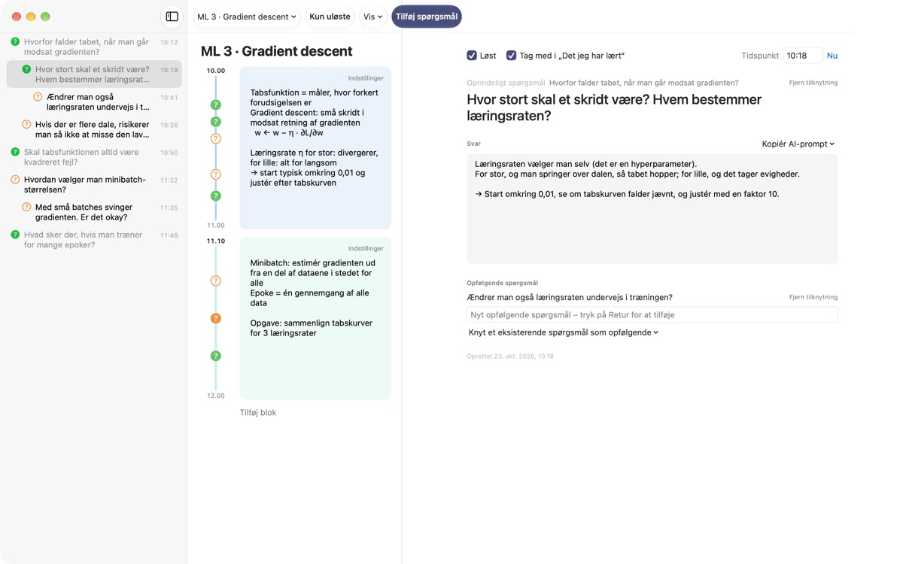
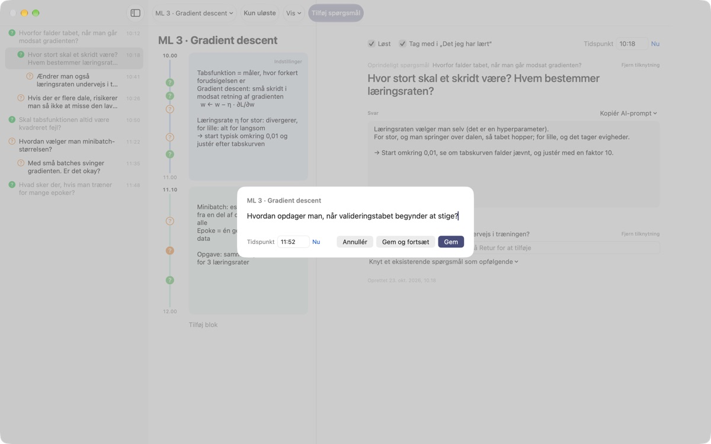
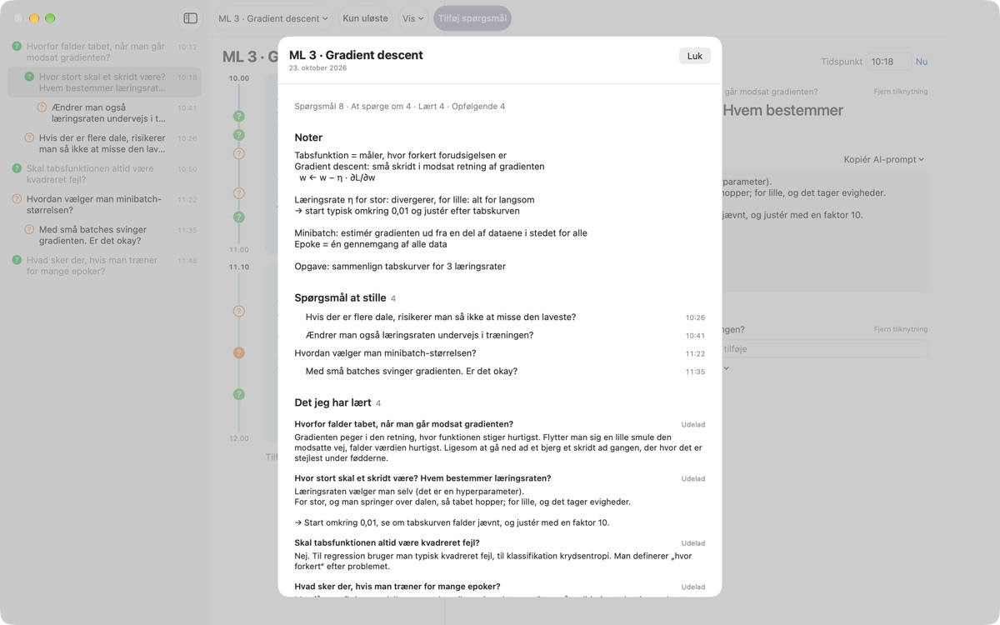
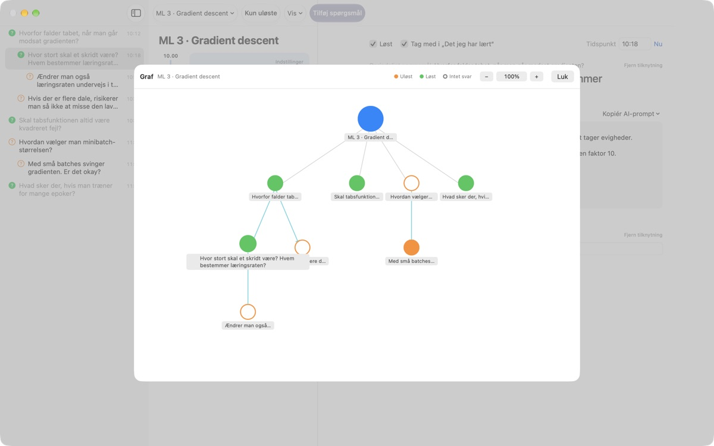

Lad ikke et spørgsmål fra
forelæsningen smutte
Tryk ⌘⇧N, skriv en linje, og spørgsmålet lander ved siden af dine noter fra præcis det minut. Du lytter videre og finder svaret senere.
Til macOS 14 eller nyere. Ingen konto, alt bliver på denne Mac.

Prøv det her
Du sidder midt i en forelæsning om maskinlæring. Skriv et spørgsmål og gem det, så kommer der et ? ved blokken for det tidspunkt. Vælg et tidspunkt uden for blokkene, og der oprettes en ny blok til det.
Kan du huske spørgsmålet, når forelæsningen er slut?
Lige når du tænker ”vent, hvorfor egentlig?”, er underviseren gået videre. Spørgsmålstegnet i margenen husker ikke, hvilken forklaring det hørte til, og spørgsmålet bliver aldrig besvaret. LectureQ hæfter hvert spørgsmål til dine noter fra netop det øjeblik og holder det fremme, til du har fundet ud af det.
Spørg uden at gå glip af næste sætning
Åbn indtastningsvinduet med Tilføj spørgsmål i værktøjslinjen eller ⌘⇧N. Tidspunktet udfyldes af sig selv. Retur gemmer, og ⌘Retur gemmer og gør dig klar til det næste.
Hvert spørgsmål vises som et ? ved den tidsblok, det hører til, så du senere straks kan se, hvilken del af forelæsningen det kom fra.

Besvarede spørgsmål bliver til det, du har lært
Skriv svaret med dine egne ord, markér spørgsmålet som løst, og det kommer med under Det jeg har lært i oversigten. Det, der stadig er åbent, bliver under Spørgsmål at stille, så listen til næste gang laver sig selv.Kopiér AI-prompt i spørgsmålets detaljer lægger en færdig prompt på udklipsholderen med forelæsningens navn og dine noter fra det øjeblik. Sæt den bare ind i den AI-tjeneste, du allerede bruger.

Se, hvor tankerne bevægede sig hen
Opfølgende spørgsmål lægger sig med indrykning under det spørgsmål, de kom fra, og grafen forbinder dem med pile. Klik på en knude for at springe direkte til spørgsmålet.
Under Læringsstatus skriver du, hvor du står nu, hvor du vil være, når kurset er slut, og hvad du gerne vil lære, og sammenligner.

Tre trin, så er du i gang
- 1
Opret en forelæsning
Fra forelæsningsmenuen til venstre i værktøjslinjen, eller importér en samtale gemt som Markdown.
- 2
Skriv det ned med det samme
Tryk
⌘⇧N. Én linje er nok, og tidspunktet står der allerede. - 3
Svar senere
Skriv svaret, og klik på ? for at markere det som løst. Det flytter til Det jeg har lært.
Tastaturgenveje
- ⌘⇧N
- Tilføj spørgsmål
- Return
- Gem
- ⌘Return
- Gem og skriv det næste
- Esc
- Annuller
- ⌘1
- Oversigt: spørgsmål at stille, det du har lært, noter
- ⌘2
- Graf: oprindelige og opfølgende spørgsmål
- ⌘3
- Tidsblokke: alle forelæsningers blokke i tidsorden
- ⌘4
- Læringsstatus
- ⌘+ · ⌘- · ⌘0
- Større tekst, mindre tekst, standardstørrelse
Du finder dem alle i menuen Vis.
Alle funktioner er gratis
Gratis
- Hurtige spørgsmål og noter pr. tidsblok
- Opfølgende spørgsmål og graf
- Oversigt, tidsblokoverblik og Læringsstatus
- AI-prompter i fem trin, kopieret til udklipsholderen
- Import af samtaler fra Markdown
Støt udvikleren
- Send et lille drikkepenge-beløb fra Indstillinger, hvis appen hjælper dig
- Drikkepenge låser ikke op for noget ekstra
Alt virker ens, uanset om du giver drikkepenge eller ej.
Ingen reklamer, ingen konto. Dine noter bliver på denne Mac.
Ofte stillede spørgsmål
Hvad betyder farverne på ?
På listen er en tom orange cirkel et spørgsmål, der ikke er løst endnu, og en udfyldt grøn et løst spørgsmål. Klik på ? for at skifte, og slå Kun uløste til i værktøjslinjen for kun at se de åbne. Ved en tidsblok viser farven, om spørgsmålet er løst, og en udfyldt cirkel, at der er skrevet et svar.
Hvordan fungerer tidsblokke?
Med Tilføj blok starter en ny blok i det øjeblik, og den forrige slutter der. Skriver du et spørgsmål på et tidspunkt, som ingen blok dækker, oprettes en blok omkring det. Med Indstillinger øverst til højre i blokken ændrer du farve, starttid og længde eller sletter den. Sletter du selv en blok, holder den forelæsning op med at oprette blokke automatisk.
Hvad er forskellen på Løst og Det jeg har lært?
Når du sætter flueben ved Løst i spørgsmålets detaljer, vælger du også, om det skal tælle med i Det jeg har lært. Der vises kun løste spørgsmål, du har taget med. Du kan også fjerne eller tilføje dem igen fra oversigten, og svaret bliver stående.
Hvordan fungerer AI-prompterne?
Åbn Kopiér AI-prompt ved Svar i spørgsmålets detaljer, og vælg et trin: Finpuds spørgsmålet, Find svaret, Udfordr svaret, Udled opfølgende spørgsmål eller Få mit svar bedømt. En prompt med forelæsningens navn, dine noter fra det øjeblik, din læringsstatus og det oprindelige spørgsmål kopieres til udklipsholderen. Selve promptteksten er indtil videre på koreansk; de fleste AI-tjenester forstår den alligevel, og du kan bede om svaret på dansk. Før du kan få dit svar bedømt, skal du selv have skrevet det. Appen forbinder sig aldrig selv til en AI-tjeneste.
Kan jeg importere en samtale gemt som Markdown?
Vælg Importér fra Markdown … i forelæsningsmenuen. # Titel bliver forelæsningens navn, og i hver ## Sektion er det første spørgsmål det oprindelige og de efterfølgende opfølgende. Det, den første taler i filen siger, bliver til spørgsmål, og det, andre siger, til svaret på spørgsmålet før. Den oprindelige fil ændres aldrig.
Hvordan sletter jeg et spørgsmål eller en forelæsning?
Højreklik på spørgsmålet på listen, og vælg Slet. Til en forelæsning bruger du Slet nuværende forelæsning i forelæsningsmenuen; dens spørgsmål og blokke ryger med. Det kan ikke fortrydes, så tag en sikkerhedskopi af det vigtige først.
Hvor gemmes mine data, og hvordan tager jeg en sikkerhedskopi?
Alt bliver på denne Mac og uploades aldrig. Afslut appen, og kopiér hele mappen ~/Library/Containers/com.lectureq.LectureQ/Data/Library/Application Support/LectureQ/ inklusive filerne -wal og -shm. Appen sender kun anonym brugsstatistik som version og hvilke dage den er åbnet, aldrig det, du skriver.
Teksten er for lille.
⌘+ gør den større, ⌘- mindre, og ⌘0 nulstiller. Det går fra 85 % til 200 %, og indstillingen huskes.
Hvilke Mac-computere virker den på?
Alle Mac-computere med macOS 14 eller nyere. Kildekoden er offentlig på GitHub under M1zz/LectureQ.
Noget virker ikke. Hvem skal jeg sige det til?
Send feedback fra appens Indstillinger (⌘,), eller skriv til adressen nedenfor. Fortæl, hvilken macOS-version du har, og hvad du var i gang med, så kan vi se på det hurtigere.
Spørgsmål eller feedback? Skriv til mizzking75@gmail.com.